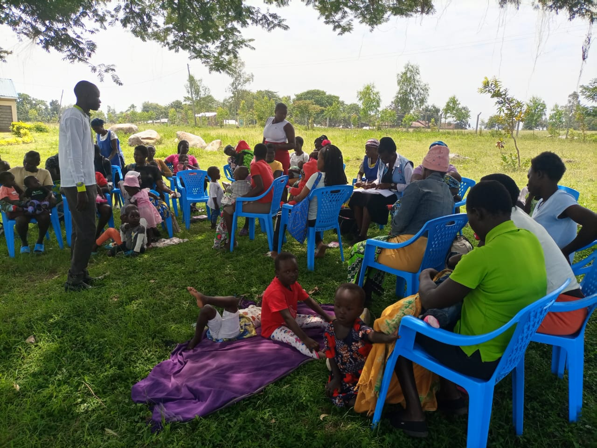
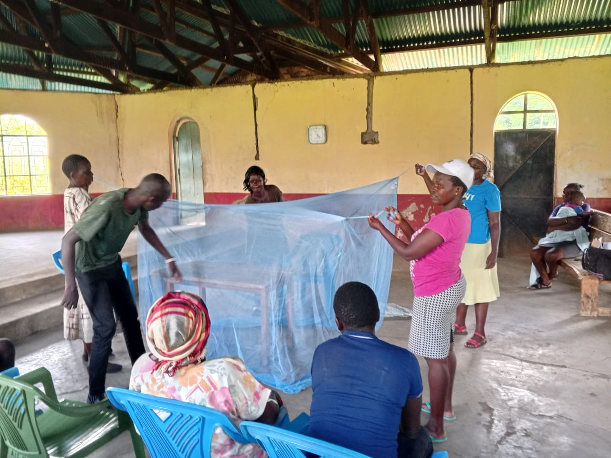

John Ochieng' Migele Portfolio
Email: johnomigele@gmail.com
Community Health & Development Professional
Profile
A dynamic and results-driven Community Health and Development professional with a passion for transformative public health initiatives. Experienced in data collection, analysis, and community mobilization with hands-on experience in primary healthcare, social behavior change, and data management.
Proficient in ODK Kobo Collect, eCHIS, SPSS, and QGIS, backed by strong academic training and practical fieldwork. Committed to leveraging data-driven insights to foster healthier, more resilient communities while maintaining ethical and community-oriented approaches.
Educational Qualifications
- BSc. Community Health and Development – Jaramogi Oginga Odinga University of Science and Technology (2021 – Expected 2025)
Relevant Coursework: Public Health Policy, Epidemiology, Community Health Strategy, Health Data Analysis - Certificate in Information Technology – Renown Computer College (August 2021)
- Certificate in GIS for Population and Development Studies – Online Course (October - November 2023), QGIS: Spatial Data Analysis and Mapping
Key Skills
- Data Collection & Management: Skilled in ODK Kobo Collect and eCHIS
- Data Analysis & Reporting: Proficient in SPSS and QGIS
- Community Health Engagement: Skilled in health communication and outreach
- Research & Evaluation: Conducted health assessments and field surveys
- Training & Capacity Building: Competent in training community health workers
- Problem Solving & Adaptability: Thrives in dynamic health settings
- Customer Service & Administration: Front desk, billing, client relations
Professional Experience
Assistant Inclusive Education Support Officer
Ability Therapy Place, Nairobi (May 2025 – Present)
- Training teachers, school admins, caregivers, occupational therapists, physiotherapists, speech & language pathologists on IEPs
- Community and school liaison, link person to the facility
Social Behaviour Change Officer – Community Level
Breakthrough Action Kenya, Muhoroni Sub-county (Feb 2024 – Sept 2024)
- Led community outreach, dialogue, and action days
- Conducted surveys and trained Community Health Promoters
Community dialogue for pregnant mothers and breastfeeding mothers on importance of clinic visits(pre and post natal)
Community dialogue for pregnant mothers and breastfeeding mothers on importance of clinic visits at Oduwo Catholic Church
Community action day on effective ITNs use at AIC Makindu Kowawa, acompanied by CHPs from Lower Tamu Community Health Unit in Muhoroni Subcounty
Screener
Makindu Dispensary, CIHEB Kenya, Muhoroni Sub-county (May 2024 – Sept 2024)
- Performed health screenings, patient data entry, and education sessions
Data Clerk
Breakthrough Action (Oct 2024 – Nov 2024)
- Data entry, cleaning, visualization, and report generation
Community Health Assistant (Volunteer)
Makindu Dispensary, Muhoroni Sub-county (Jan 2023 – Sep 2024) Supporting Lower Tamu and Makindu Community Health Units
- Implemented eCHIS V2, conducted household visits, supported CHU reporting conducted support supervision to the CHPs, defaulter identification and tracing, WASH services in the communities Health units
HPV vaccination outreach at Okwach Primary in Muhoroni Subcounty
Research & Projects
- Uptake of HIV Testing & Counselling among students at JOOUST
- Effectiveness of early occupational therapy intervention on development among children with cerebral palsy at JOOTRH
- Effectiveness of RTSS and ITNs use among under 5 children in Muhoroni Subcounty RA

Data collection exercise where I was crossing River Omonyo Lee